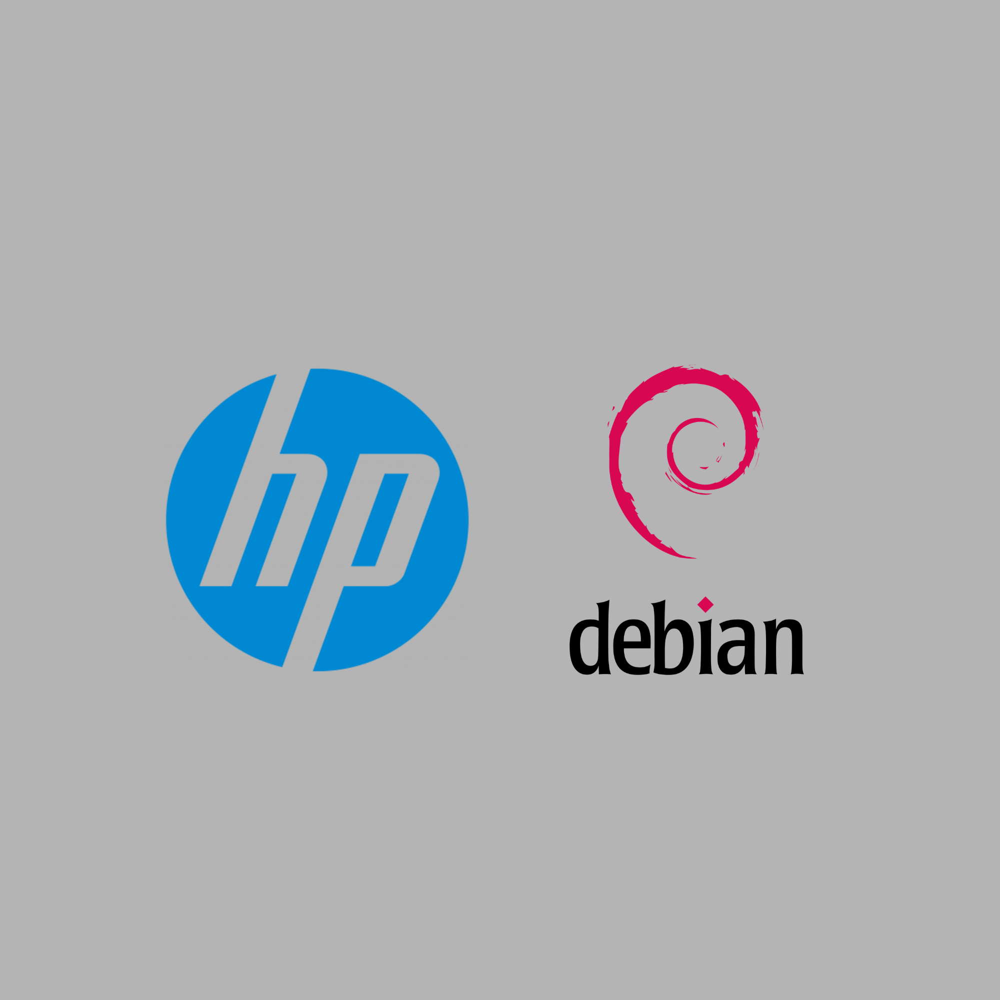

Mes Projets
Des projets pour apprendre en faisant
.png) En ligne
En ligne
KBSunrise.org
Contexte & Besoins
L'association Kisoro Batwa Sunrise avait besoin d'un site web professionnel pour promouvoir ses actions en Ouganda et faciliter la collecte de dons. Le site devait être multilingue, optimisé pour le référencement et facile à administrer.
Langages & Outils

PersonnelHomelab - Serveur Debian
Contexte & Besoins
Recycler un ancien PC en serveur pour héberger mes propres services, apprendre l'administration Linux et la conteneurisation, et développer des compétences en infrastructure.
Langages & Outils
Travail réalisé
- Installation et configuration de Debian 12
- Déploiement de 10 services Docker
- Sécurisation SSH (clés ED25519) et pare-feu UFW
- Mise en place d'un VPN Tailscale pour l'accès externe
Bilan
Ce projet m'a permis de monter en compétence en administration Linux, en sécurité réseau et en orchestration de conteneurs. J'ai appris à gérer une infrastructure complète de manière autonome.
 PPE
PPE
Ô de rêves
Contexte & Besoins
Projet de création d'une boutique en ligne fictive dans le cadre du BTS SIO. L'objectif était de développer un site e-commerce complet avec gestion des utilisateurs, catalogue produits, panier et paiement sécurisé.
Langages & Outils
Travail réalisé
- Conception de la base de données (utilisateurs, produits, commandes)
- Développement du front-end (HTML/CSS/JS) responsive
- Développement du back-end en PHP (connexion, inscription, panier)
- Gestion de session et sécurisation des données
Bilan
Ce PPE m'a permis d'approfondir mes compétences en PHP, MySQL et JavaScript, ainsi que de comprendre les enjeux de sécurité d'une application web e-commerce.
 Personnel
Personnel
Logah Tubes
Contexte & Besoins
Créer un outil pratique pour télécharger l'audio des vidéos YouTube en MP3, en utilisant Python et Flask. Un projet personnel pour allier passion pour la musique et développement web.
Langages & Outils
Travail réalisé
- Développement d'une API Flask avec yt-dlp
- Conversion audio en MP3 (192 kbps) avec FFmpeg
- Interface utilisateur minimaliste avec HTML/CSS/JS
- Téléchargement asynchrone avec JavaScript
- Gestion des erreurs et nettoyage des URLs
Bilan
Ce projet m'a permis de découvrir Python et Flask, de comprendre le fonctionnement des APIs et de maîtriser l'intégration de bibliothèques externes. Une belle expérience de développement full-stack.
 App
App
Apple Music - Gestion de playlist
Contexte & Besoins
Application Java avec IHM Swing développée dans le cadre du BTS SIO. L'objectif était de créer un gestionnaire de playlist musicale avec authentification, CRUD complet (Consultation, Ajout, Modification, Suppression, Recherche) et une architecture "une seule JFrame".
Langages & Outils
Travail réalisé
- Connexion sécurisée
- Consultation des musiques dans une JTable
- Ajout d'une chanson (titre, artiste, durée)
- Modification d'une chanson sélectionnée
- Suppression par saisie du titre
- Recherche insensible à la casse
- Héritage avec la classe Podcast (extends Chanson)
- Collection ArrayList pour stocker les musiques
Bilan
Ce projet m'a permis de maîtriser la création d'interfaces graphiques en Java Swing, la programmation orientée objet (héritage, collections, encapsulation) et l'architecture à une seule JFrame avec changement de panels.